HyperMuse · press kit
An audio-reactive holographic fan on a 4.3 m tower, and the browser-based show that drives it: a moon carrying words, geometry and weather on its dark side, with a poem screen beside it. Everything here was rendered from the pages in this repository — nothing is concept art.
Clips are viewing copies. Full-resolution masters are rebuilt from source with the commands at the foot of this page. If you are booking it for a set rather than writing about it, start here.
The installation
An audio-reactive holographic fan, rigged above a DJ booth or standing on its own tower. It ships with an equalizer that can be preconfigured for the night's music, and it will play VJ loops or 3D visuals supplied as mp4 - or run this show, live and reacting to the room.
Debuted at Burning Man PlayAlchemist, 2023.
| Height | 4.3 m to the top of the disc, adjustable |
|---|---|
| Footprint | 2.5 m square ground frame |
| Install | 2 people, 2.5 hours |
| Breakdown | 2 people, 1 hour |
| Needs | a ladder, and a laptop with an HDMI port |
| Cost | negotiable - 750 EUR is the usual single-day install |
- Joel Dietz
- @fractastical Telegram
- +1 (628) 333-1011 WhatsApp
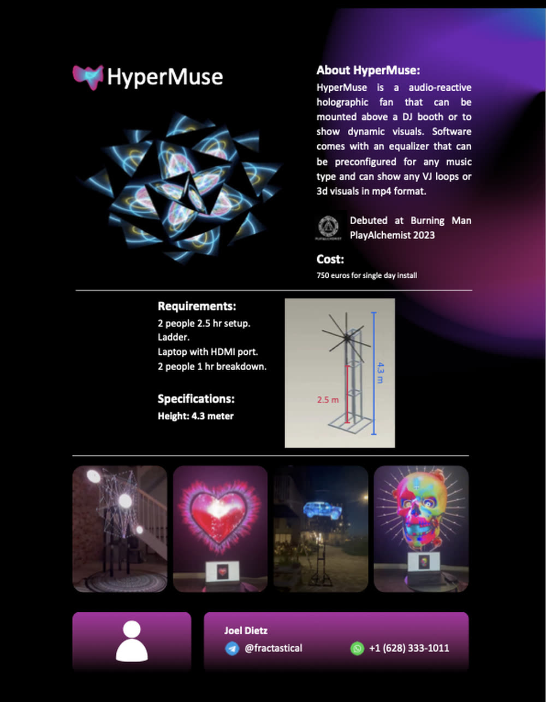
The sheet as sent: hypermuse-one-pager.pdf. It quotes one height and one price; the table above is the current answer where the two differ. The clip below is the rig itself, rendered to the same dimensions.
If you are the one playing
A guest logo sits on the moon's shadowed side the same way the word does - either as clean artwork or rebuilt out of moon footage so it looks like terrain. It is shot and checked at full size beforehand, so nobody discovers on stage that a wordmark is unreadable at forty feet.
The machine driving the fan opens its own microphone, so the geometry answers whatever the PA is actually doing. Bass swells the sphere, beats flare the orbiting pieces, loud passages shake the lettering. Nothing has to be routed through us and nothing needs timecode.
Any loop supplied as mp4 goes into the rotation beside the generated show, so the night can be your content, ours, or a cut of the two. The equalizer can be set for the kind of music before doors.
The programme is an hour of scheduled acts that loops for as long as the night does - a different effect each revolution, words, eclipses, orbits, geometry. The speed control stretches it, so half speed is a two-hour arc. It takes direction live if you want it, and needs nobody if you do not.
The same show drives projection - 402 x 226 cm is its native shape, two surfaces if you have them - and LED walls at 1920 x 1080 for a bar screen or 1872 x 1296 for a DJ screen.
What arrives
- The fan itself, 180 cm of spinning LED
- A box-truss tower and its 2.5 m square ground frame
- The show, configured for your night, with your mark already tested on it
What the room provides
- 2.5 m square of floor, and the height to use it
- A ladder
- A laptop with an HDMI port, if you would rather run it yourself
- Two people and 2.5 hours to build it, one hour to strike it
Motion
Stills
{kind=link}
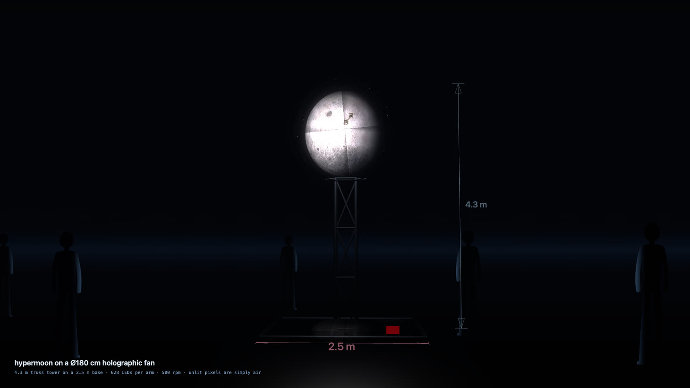
{kind=link}
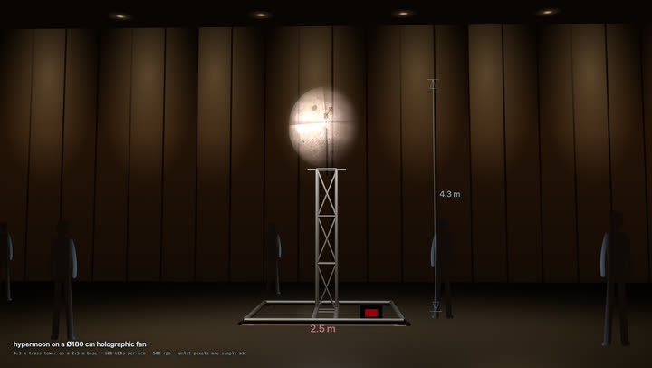
{kind=link}
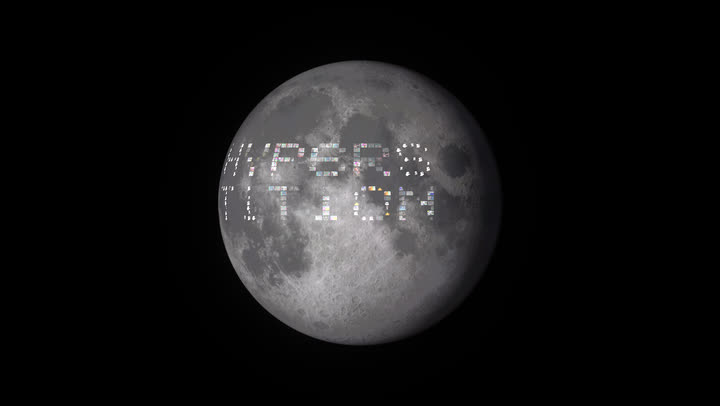
{kind=link}
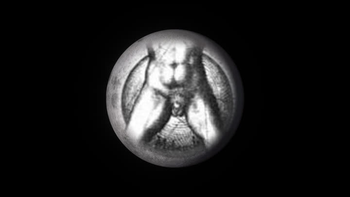
{kind=link}
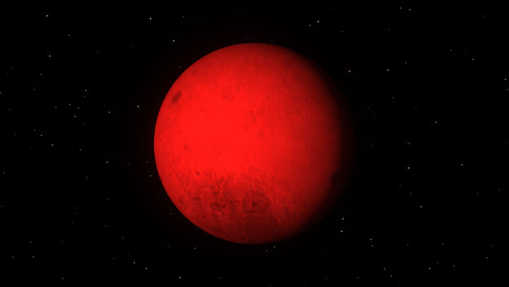
{kind=link}
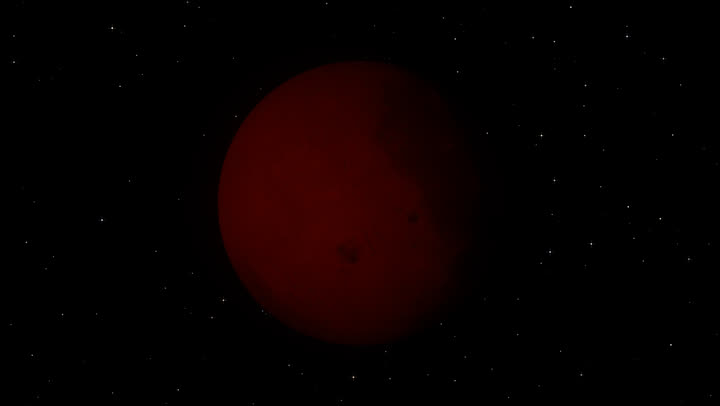
{kind=link}
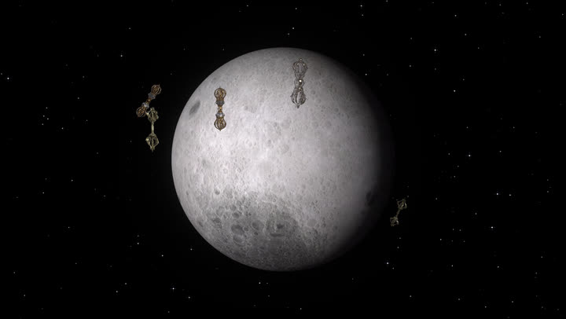
{kind=link}
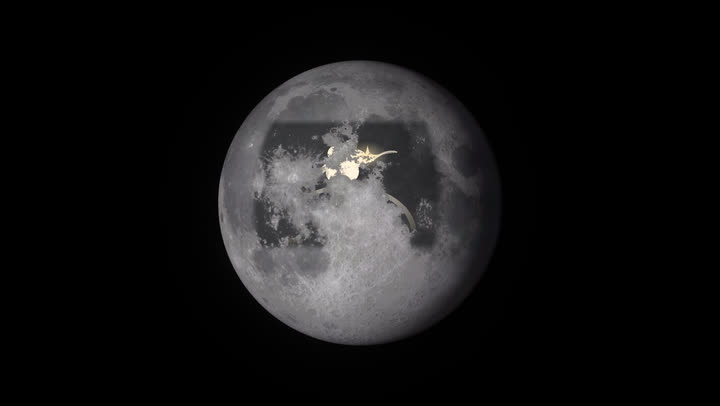
{kind=link}
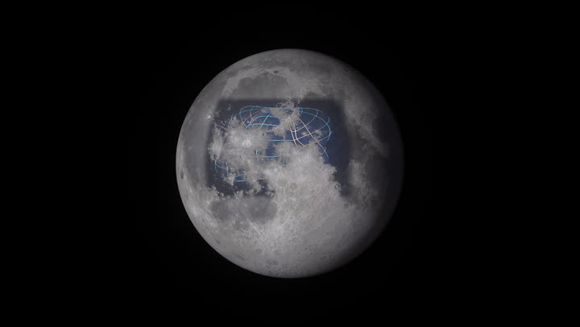
{kind=link}
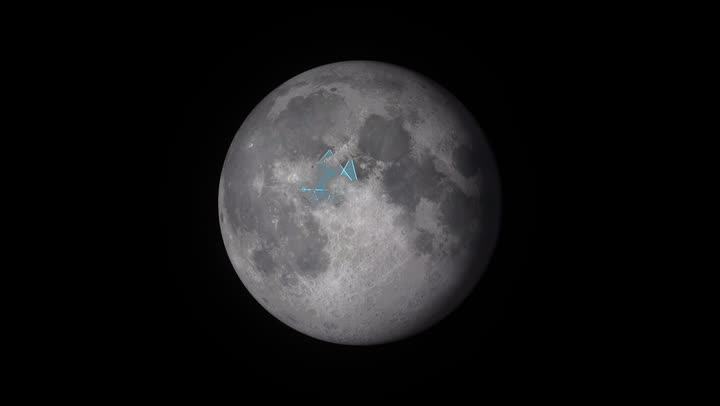
{kind=link}
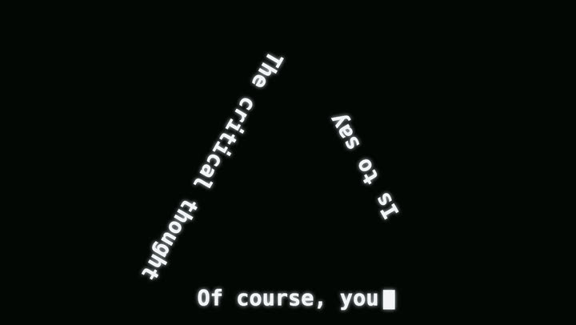
{kind=link}
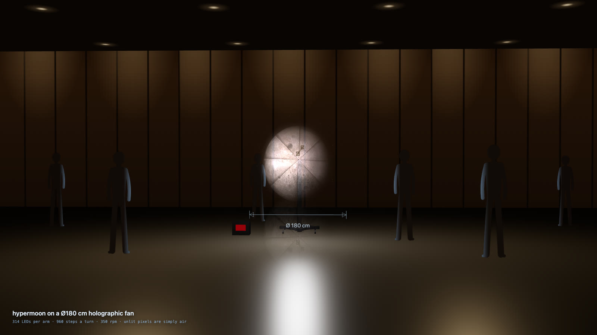
{kind=link}
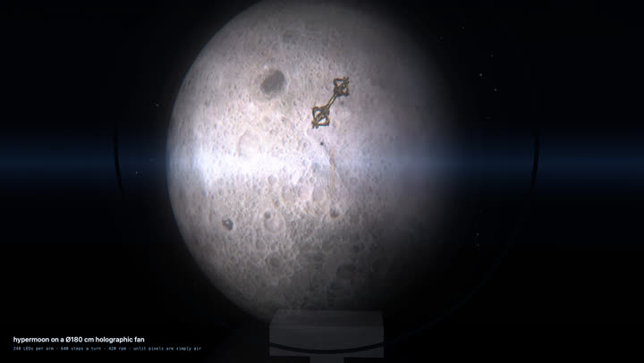